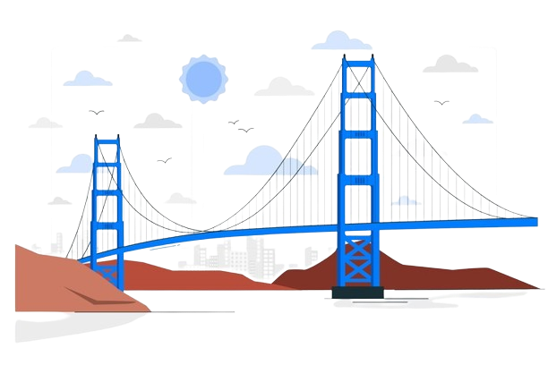

|  |
HOME | ABOUT US | GELLERY | CONTACT |
A bridge is a structure built to span a physical obstacle (such as a body of water, valley, road, or railway) without blocking the way underneath. It is constructed for the purpose of providing passage over the obstacle, which is usually something that is otherwise difficult or impossible to cross. There are many different designs of bridges, each serving a particular purpose and applicable to different situations. Designs of bridges vary depending on factors such as the function of the bridge, the nature of the terrain where the bridge is constructed and anchored, the material used to make it, and the funds available to build it. The earliest bridges were likely made with fallen trees and stepping stones. The Neolithic people built boardwalk bridges across marshland. The Arkadiko Bridge, dating from the 13th century BC, in the Peloponnese is one of the oldest arch bridges still in existence and use.
The simplest and earliest types of bridges were stepping stones. Neolithic people also built a form of boardwalk across marshes; examples of such bridges include the Sweet Track and the Post Track in England, approximately 6000 years old.Ancient people would also have used log bridges consisting of logs that fell naturally or were intentionally felled or placed across streams. Some of the first human-made bridges with significant span were probably intentionally felled trees. Among the oldest timber bridges is the Holzbrücke Rapperswil-Hurden bridge that crossed upper Lake Zürich in Switzerland; prehistoric timber pilings discovered to the west of the Seedamm causeway date back to 1523 BC. The first wooden footbridge there led across Lake.
A bridge is a structure built to span a physical obstacle (such as a body of water, valley, road, or railway) without blocking the way underneath. It is constructed for the purpose of providing passage over the obstacle, which is usually something that is otherwise difficult or impossible to cross. There are many different designs of bridges, each serving a particular purpose and applicable to different situations. Designs of bridges vary depending on factors such as the function of the bridge, the nature of the terrain where the bridge is constructed and anchored, the material used to make it, and the funds available to build it. The earliest bridges were likely made with fallen trees and stepping stones. The Neolithic people built boardwalk bridges across marshland. The Arkadiko Bridge, dating from the 13th century BC, in the Peloponnese is one of the oldest arch bridges still in existence and use.
There are several methods used to monitor the condition of large structures like bridges. Many long-span bridges are now routinely monitored with a range of sensors, including strain transducers, accelerometers,[86] tiltmeters, and GPS. Accelerometers have the advantage that they are inertial, i.e., they do not require a reference point to measure from. This is often a problem for distance or deflection measurement, especially if the bridge is over water